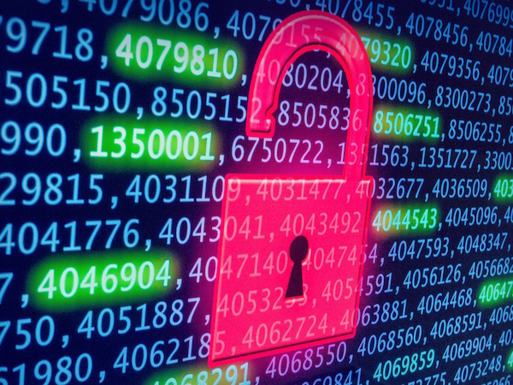

Post #1 O reflexo da tecnologia

Nos últimos anos a tecnologia vem avançando cada vez mais rápido deixando muitas pessoas e empresas para trás, podemos perceber isso em relação ao mercado amazon go onde praticamente diminuiu quantidade de funcionários como balconistas e caixas, porém vão necessitar de pessoas especializadas em programação, infraestrutura de rede e técnicos de mecatrônica. Sendo assim as pessoas necessitam se adaptar cada vez mais ao novo mercado de trabalho, afinal a quarta era industrial ja esta muito avançada, temos carros elétricos para colaborar com o meio ambiente o que significa que mecânicos automotivos precisarão se especializar nessa novas áreas, o Mark Zuckerberg fundador do Facebook está desenvolvendo basicamente um mundo virtual onde vai revolucionar ainda mais os mercados, necessitando de mais técnicos em segurança da informação por exemplo.
A pandemia da COVID-19 fez muitas empresas de grande porte evoluírem , grande parte das empresas iniciaram o home office e perceberam que isso fez os funcionários serem mais produtivos e conseguiram diminuir custos como vale transporte, aluguel, energia entre outros fatores, e isso é outra evolução no mercado de trabalho onde pessoalmente acredito que gerou um grande impacto positivo.
Novas tecnologias podem gerar custos muito alto, mas trazem grandes retornos positivos e tanto as empresas como a população precisam estar sempre preparadas para novos mercados, pois é isso que a indústria da tecnologia faz, ela aprimora um lado e outro fica escasso afetando diretamente todo o mercado em volta.
Post #2 A importancia da cibersegurança

Ao pesquisar algumas coisas sobre ip externo e interno e vírus de computadores, me lembrei da época do orkut ou quando o facebook começou no Brasil. Talvez na época a cibersegurança estava em evolução, afinal nos dias de hoje tudo evolui muito rápido. Nessa época as perguntas de recuperação de senha era tão óbvia que ao analisar uma pessoa ou ao conhecer a pessoa, dava para trocar a senha de forma fácil conseguindo o acesso a rede social, engraçado que não era apenas em redes sociais mas também em e-mails, eu conseguia entrar em e-mails e mudar a senha de uma rede social por exemplo. fiz muito isso com alguns colegas de escola, apenas por diversão e no final eu avisava que entrei no e-mail ou na rede social dela. Isso me mostra a importância da cibersegurança e a importância do hacking ético nos dias de hoje, devemos sempre melhorar o sistema de segurança. Outra forma que eu conseguia acessar a rede social de algum colega era quando eles vinham em casa e eu tinha um software que capturava as teclas digitadas no teclado e salvava em um arquivo escondido, assim que a pessoa fosse embora abria o arquivo e buscar a senha da pessoa e entrava e mudava a senha. Isso tudo me mostra como é importante ativar todos os modos de segurança, como o atual dois fatores, onde após colocar a senha precisa confirmar que é você seja um e-mail enviado, um aplicativo de autenticação (como Google Authenticator ou authy) ou uma permissão enviada ao seu telefone. Recentemente li um artigo (vou deixar no final o link) onde empresas se juntaram para acabar com uso de senhas, é uma ótima ideia para não termos que ficar sempre lembrando da senha ou tendo que criar uma senha para cada site diferente, uma forma meio que universal contanto que traga segurança às pessoas.
Outros perigos das redes sociais é a privacidade, engraçado como as pessoas falam de falta de privacidade sendo que eles mesmo publicam e compartilham sobre suas vidas em redes sociais aberto para todos. Se quer privacidade, vá nas suas configurações e coloque para que somente seus amigos visualizem suas fotos ou suas informações como data de nascimento, onde nasceu, onde mora ou status do seu relacionamento. Esse é um dos motivos que exclui meu facebook, apesar de ser uma rede social incrível, poderia acabar me expondo demais fora as obrigações sociais como parabenizar alguém por algo sendo que nem fala mais com a tal pessoa ou sendo que ela ta nem ai para você.
Este artigo mostra a importância da evolução da cibersegurança, ética e a privacidade nas redes sociais, sites e e-mails. A importância de ativar o sistema de dois fatores e a implementação dele nos sites e aplicativos, garantindo uma segurança maior. Mostra também que em breve pode acabar com o uso de senhas e usar métodos mais eficientes a qual não tenhamos que ficar memorizando. Outro ponto deste artigo é como as redes sociais podem acabar com nossa privacidade se não tivermos cuidado.